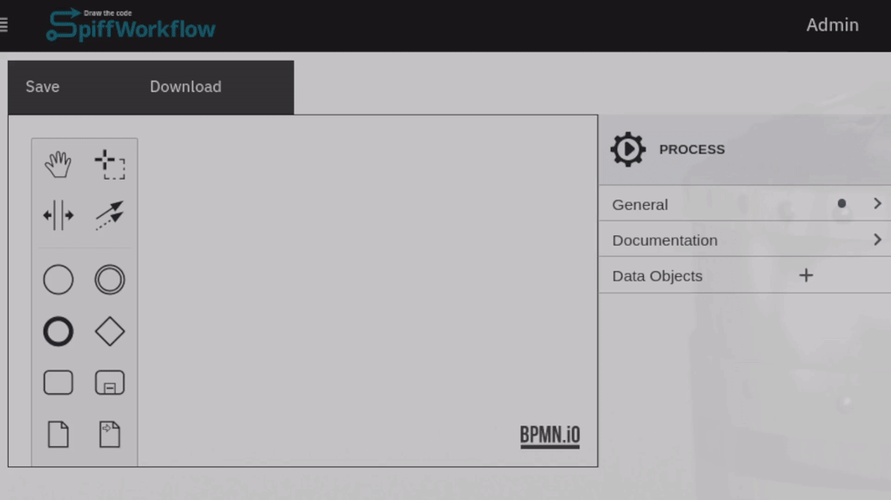
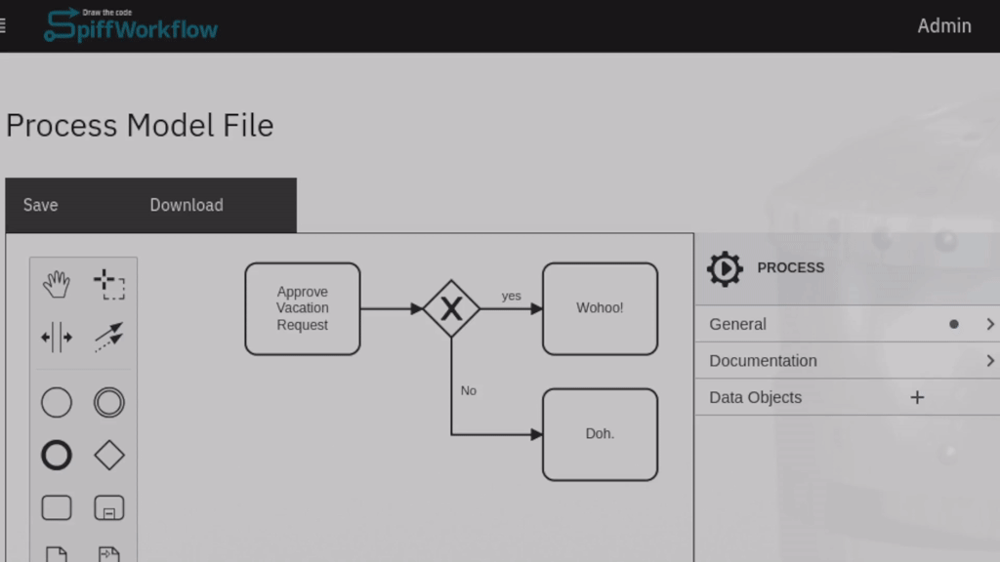
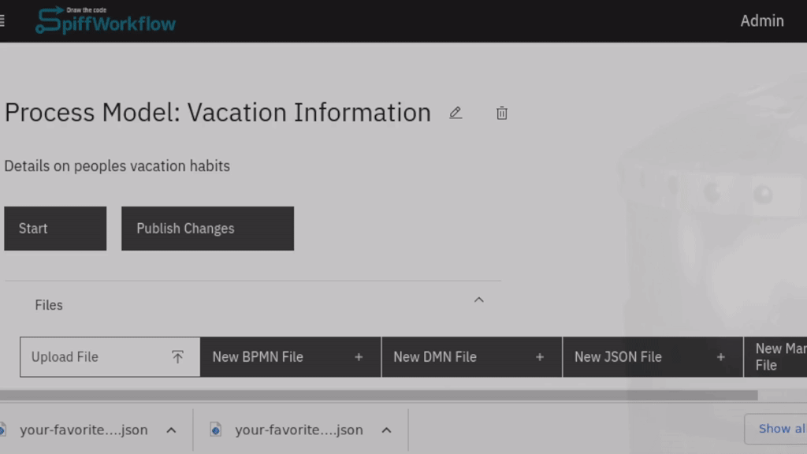
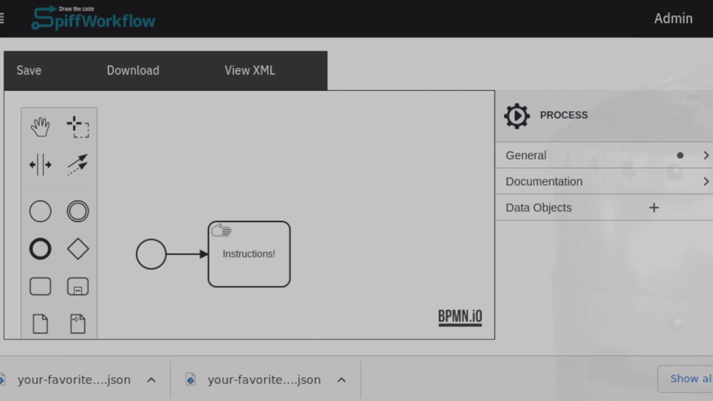
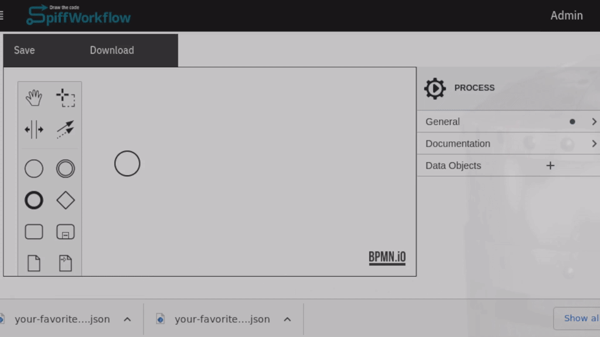
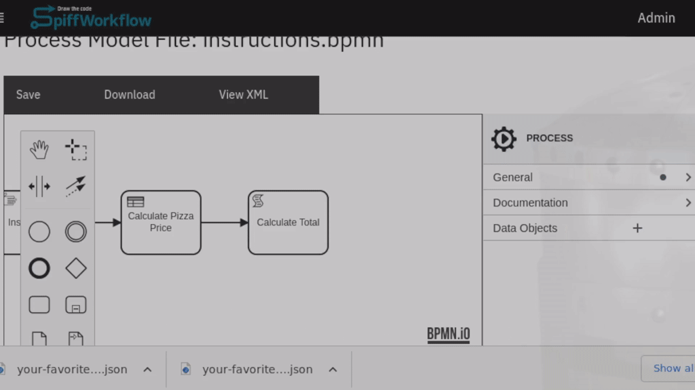

User Tasks – Gather information from people
You can create highly complex web forms to gather information from end users - injecting this information into your workflow process. We are using the excellent and feature complete open source React Json Form Schema with features such as nested sections, validation, and custom components. A new form builder is in the works to make getting started easy, while expert users can take full control of all this tool has to offer.
Service Tasks – Send and retrieve information from other software
Service Tasks allow you to configure connections to third party applications. You can pull live data from an AWS DynamoDB Server, or push a message out to a Slack channel. Following a basic pattern, you can add new connectors to your own software services by writing a small bit of Python code. Many connectors are in the works (AWS services, Postgres) and new ones are easy to create.

Pools and Lanes – Who is in charge right now?
Pools and Lanes clearly and accurately describe the handoff of authority between groups of people, making it crystal clear who is responsible for each task.
This is great for approval processes. For example …
“Does Jason deserve that Heavy Metal Cruise Ship vacation in February?” (He definitely does)
Or the hand off of a complex job from one team to the text
The field crew is done. It’s time for Steve to do the computations.
Timer Events - Watching the clock
Computers watch clocks. On the average, one could say it is pretty much all they do. Rather than have the computers constantly remind us of what time it is, perhaps they could just deal with the problem, kick off the process, make the request, check the feedback, send the reminder.
“The Field Crew completed the survey. It’s been on Steve’s desk for two days. It’s time to ping Agnes and get this back on track.”

Messages - Listening to the World
Service Tasks are how SpiffWorkflow speaks to the world; messages are how SpiffWorkflow listens. Message Events allow you to start new processes, cancel existing processes, or pause and wait for some external communication. Learn more in our article on Messages.
“We told our finance software to fire off an API call to SpiffWorkflow whenever a payment is processed. Then SpiffWorkflow does all the legwork of communicating to people via their preferred system – email, phone, Slack, text – and it creates the paper trail so there is a record of what went down …”
Perspectives – Custom Reporting Tools
It doesn’t always make sense to do things in the order in which they are received. Urgent requests may need to be prioritized, and “urgent” can be defined in many ways. Perspectives allow you to report on processes in custom ways. You can extract important information from the workflow as it executes and make this data available to your lists. Now you can easily find which tasks you should pick up next.

Decision Tables
Decision tables (DMN / Decision Model Notation) look a bit like spreadsheets and allow you to articulate core business rules in ways that are easy to understand, update, and maintain. These tables can be directly embedded and referenced from your diagrams.

Granular Permissions
SpiffArena can be connected to any OpenID system. It is possible to manage user authentication outside SpiffWorkflow using public systems like Google and Facebook or private systems with products like KeyCloak.
At the same time, SpiffArena comes with a permission system that can grow with you. You can use the same diagram tools described above to control permissions for all of your users - setting up permission tables that can be simple (everyone can start any process) to very specific (“This API endpoint is only accessible to the accounting department lead”).
Built-in Editors
With editors for Python, Markdown, and JSON, you can quickly jump from drawing the diagram to incorporating the small bits of code, documentation, and end user instructions in a way that is fast, simple and intuitive.

Data Encapsulation
SpiffWorkflow supports BPMN’s Data Objects, Data Inputs and Data Outputs, allowing you to visually control what data is accessible. When composing diagrams within diagrams, you can declare the expected variables that will be provided and the ones that will be returned, keeping your workflows clean, consistent, and easy to understand. Learn more in our article on Data Objects
Python Editor and Unit Tests
The robust Python editor allows you to write small bits of code that help modify data (say, user input on a form) to fit a certain purpose (sending a formatted message to Slack). To make these modifications you can use Script Tasks. And we provide a way to test them to make sure they do what you expect them to do!
